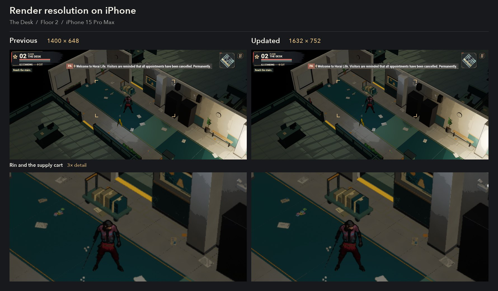

100 Floors of Zombies
They sold a home where nobody dies. It delivered.
An isometric sword game for iPhone. Rin, a dismissed bodyguard, climbs a sealed 100-floor tower with her family's sword, one room at a time. The residents are still at work. They would like you to stop calling them zombies.
The premise
Live forever. Never leave.
Hōrai Tower sold its residents more than a flat. It sold them Eternal Residency: a home, plus a lifetime course of the company's anti-ageing treatment.
On the night of the Ascension Gala the founder released the final dose through the ventilation, to twelve thousand people at once. It worked. None of them can die. They just stopped being people. The shutters came down and the army fenced off the block.
Then Rin's phone buzzed. One text from the founder's daughter, on the top floor: Come up. Please.
The story and the towerHow you play
Cut. Roll. Play your hand.
Left thumb moves. Right thumb cuts. Swipe to roll through a swing, chain a combo when the ring turns gold, and spend your Ultimate when the room fills up.
Between floors you draw from a 52-card deck painted for the tower. Five cards are in play, and the poker hand they make is your power: a pair is one thing, a straight flush is another. Every third floor you can keep the hand or change up to three cards.
Every fifth floor has a guardian with its own fight. They talk. They object to the z-word.
Dev log
What's new
What changed, what broke, what we learned. 12 posts so far, starting from the first night.

An animated intro, narrated by Rin
Seventy seconds that explain the premise, drawn as a cartoon and told in Rin's own dry voice. It also settled what Rin sounds like in the game.

Homura learns the Captain's forms
The Expedition's duellist now fights with eight real sword forms across three duels that get faster and harder. She escapes the first two. Her blade glows red.

Build 0.1 is on TestFlight
The first build reached Apple's testing service this morning. It is one tester for now: the developer, on a new phone.

The tower's people
The staff are still on shift
A maintenance chief who will not stop the pumps. A head of compliance who quotes conduct policy at you. A night nurse with ice in her hands. A gardener who came back perennial.
The surface is funny and the story underneath is not: a promise, a plague, a father, a mercy. Rin is the straight man in all of it.
Meet the castHow it's made
One developer, one AI agent, and no level files.
Unreal Engine 5.8 · C++ · Blender · Remotion · ElevenLabs
The tower is generated in code. Characters are rigged by scripts, never by hand. The game plays itself in automated climbs to find what is broken. We write all of it down.
The technique
Timeline
From a late-night idea to a test build
The two most recent days. The whole story, hour by hour, is on the timeline page.
16 November 2026
The climb is finished end to end just after midnight, then balanced, filmed, narrated in Thai, taught to new players and packaged for Android.
- 00:15The whole climb is playable
Story, deck, two rooftop endings and Endless mode.
Read the post - 00:43Ophiel at the tower core
Every route to dawn verified by automated climbs.
- 09:21The balance pass
The full climb balanced, and each guardian given a distinct fight.
- 09:50The showcase, narrated in Thai
Voiceover and synced subtitles with ElevenLabs v4, then a developer update in Pondd's own voice.
Read the post - 15:24Rin's Ultimate: the ink kick
She kicks the blade across the room. Filmed, then reworked twice the same afternoon.
Read the post - 17:46The first fight teaches the game
A sharper iPhone view and a first room that teaches slash, combo, roll and Ultimate.
Read the post - 20:44Android landscape playtest
Packaged and optimized for a first Android test.
17 November 2026
Stand-in bosses start getting bodies of their own, Homura learns real sword forms, the game reaches TestFlight, and Rin gets a voice.
- 00:26The Chief and the Winter Widow
Two guardians get their own bodies and, for the Widow, a designed fight.
Read the post - 08:34Build 0.1 uploaded to TestFlight
The first build on Apple's testing service.
Read the post - 12:55Homura fights as the Captain
Eight sword forms, three hardening duels, an escape and a red blade.
Read the post - 13:40An animated intro, narrated by Rin
A 70 second cartoon of the premise. Rin's voice is chosen for the game.
Read the post - This site goes up
The dev log starts here.